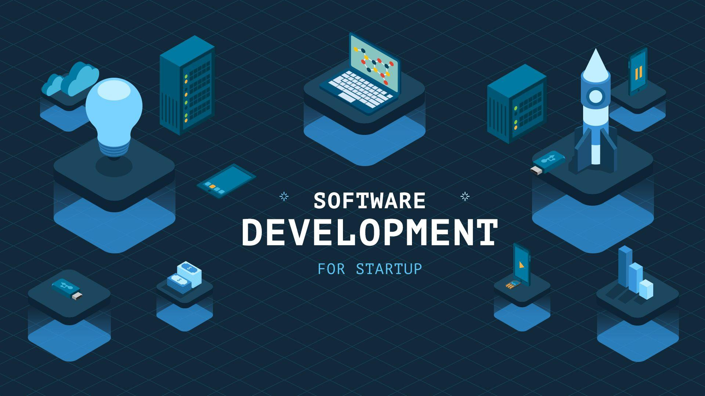

Destaques

Desenvolvimento de Software Multiplataforma
O CST em
Desenvolvimento de Software Multiplataforma tem como
objetivo
formar profissionais capazes de desenvolver software para diversas
plataformas, tais como Web, Desktop, Móvel, Internet das Coisas (IoT), em Nuvem,
empregando conceitos de Segurança da Informação e Inteligência
Artificial.
Assim como especializar profissionais para trabalhar com metodologias
ágeis de gestão de projetos, versionamento, integração e entrega
contínua de software, visando desenvolver soluções de software que
atendam os critérios de qualidade exigidos pelo mercado. Além disso,
pretende-se preparar os egressos para estabelecer relacionamentos
produtivos; desenvolver a capacidade de comunicação, inclusive em
língua estrangeira; utilizar raciocínio lógico; gerar soluções
inovadoras; saber posicionar-se enquanto profissional e cidadão ético,
com responsabilidade social e ambiental.
Duração: 3 anos (6 semestre)
Vagas: 35 vagas ofertadas por vestibular (Vestibular Semestral)